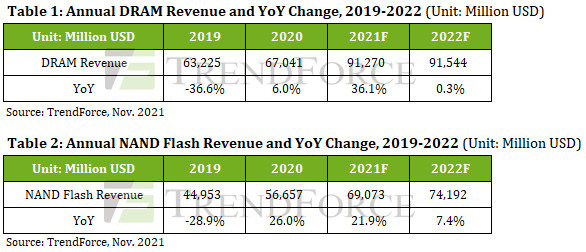
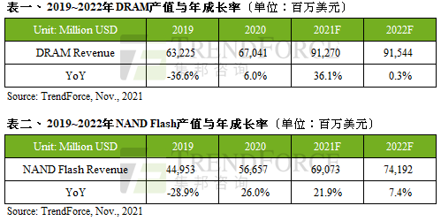
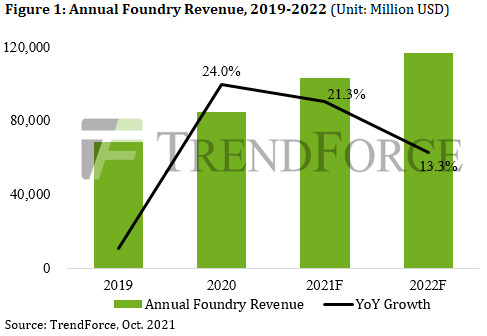
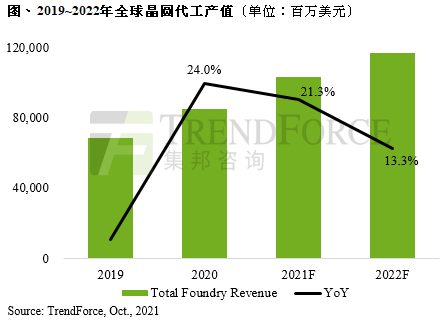
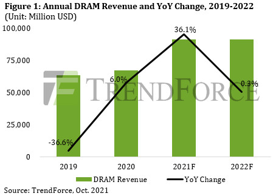
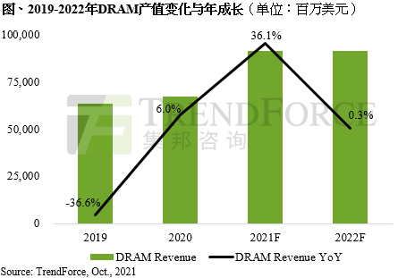
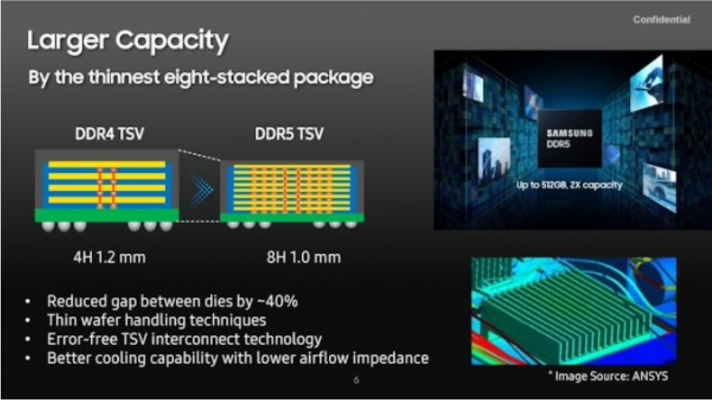
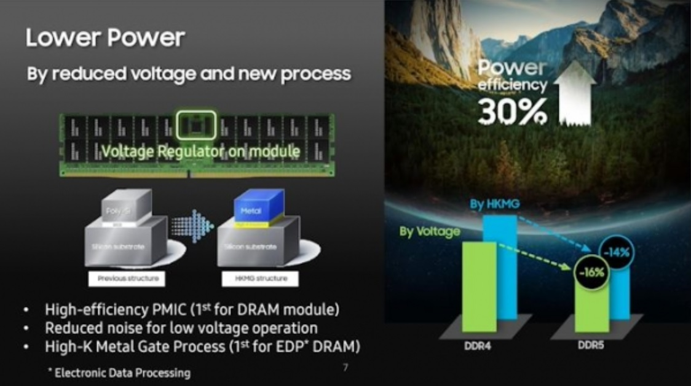
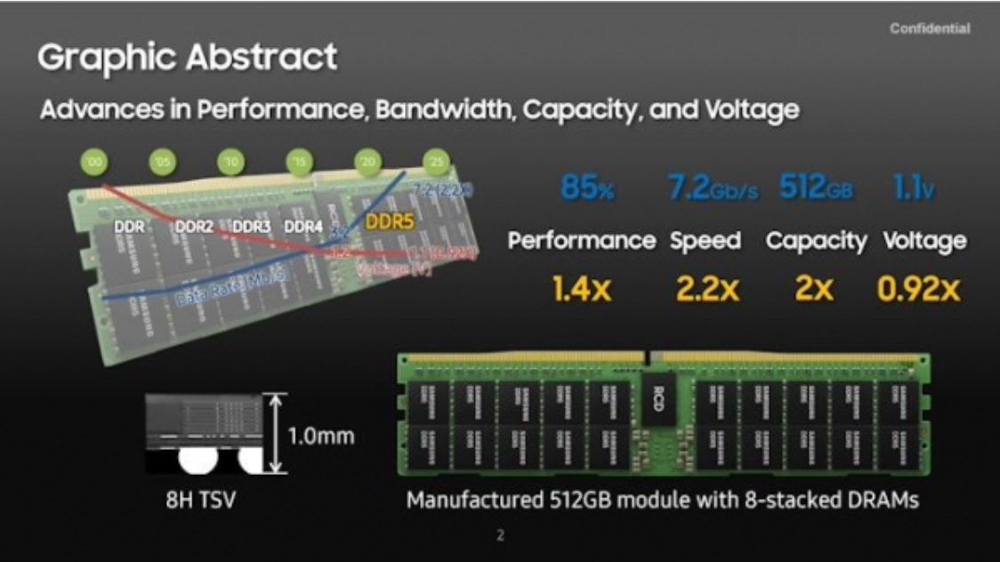

Market Trends
Annual DRAM Revenue for 2022 Expected to Reach US$91.5 Billion, with Prices Likely to Rally in 2H22 (TrendForce 2021-11-04)
Despite the forecasted 18.6% YoY growth in total DRAM bit supply next year, the global DRAM market is still expected to shift from a shortage situation to an oversupply, according to TrendForce’s latest investigations. This shift can primarily be attributed to the fact that, not only are most buyers now carrying a relatively high level of DRAM inventory, but DRAM bit demand is also expected to increase by only 17.1% YoY in 2022. On the price front, the oversupply situation will result in a drop in DRAM ASP in 2022 but not a major decline in annual DRAM revenue, thanks to the oligopolistic nature of the DRAM industry. Annual DRAM revenue for 2022 is expected to reach US$91.54 billion, which represents a slight YoY increase of 0.3%.
Based on an analysis of DRAM sufficiency ratio (which refers to the surplus of supply in comparison with demand) for each quarter in 2022, TrendForce forecasts a 15% YoY decrease in DRAM ASP for 2022, with prices undergoing the more noticeable declines during the first half of the year. Heading into 2H22, however, owing to the rise in DDR5 penetration rate, as well as the arrival of peak seasonal demand, the decline in DRAM ASP will likely narrow. TrendForce does not rule out the possibility that DRAM ASP may even hold flat or undergo an increase in 2H22.
Annual NAND Flash revenue is expected to experience yet another increase next year by 7.4% YoY while numerous suppliers compete in higher-layer NAND Flash market segment
…………
Profitability of suppliers may be constrained if total revenue fails to keep pace with continuously rising CAPEX
…………

预估2022年DRAM产值达915亿美元，下半年起可望扭转跌价态势 (集邦咨询 2021-11-04)
根据TrendForce集邦咨询研究显示，2022年的DRAM供给位元成长率约18.6%，然而由于目前买方库存水位已偏高，加上2022年需求位元成长率仅17.1%，明年DRAM产业将由供不应求转至供过于求。尽管DRAM价格将因供过于求而出现下滑，但在寡占市场型态下，整体产值并不会大幅下跌，预估2022年的DRAM总产值将达915.4亿美元，年增微幅上升0.3%。
TrendForce集邦咨询以明年各季度的供过于求比例（以下称：sufficiency ratio）作为预测基础，预期DRAM平均销售单价将年减15%，而价格下滑幅度在上半年较为明显；下半年起将受惠于DDR5的渗透率提升与旺季需求效应带动，均价跌幅将收敛，不排除有持平或涨价的可能性。
高层数产品竞争者众，NAND Flash明年产值再增7.4%
…………
资本支出持续拉高，产值若无法跟进成长，恐压抑厂商获利能力
…………

Annual Foundry Revenue Expected to Reach Historical High Once Again in 2022 with 13% YoY Increase with Chip Shortage Showing Sign of Easing(TrendForce 2021-10-28)
While the global electronics supply chain experienced a chip shortage, the corresponding shortage of foundry capacities also led various foundries to raise their quotes, resulting in an over 20% YoY increase in the total annual revenues of the top 10 foundries for both 2020 and 2021, according to TrendForce’s latest investigations. The top 10 foundries’ annual revenue for 2021 is now expected to surpass US$100 billion. As TSMC leads yet another round of price hikes across the industry, annual foundry revenue for 2022 will likely reach US$117.69 billion, a 13.3% YoY increase.
Foundries will gradually kick off production with newly added capacities in 2H22 in response to the ongoing chip shortage
………………
Chip shortages will show signs of easing, but component gaps will continue to impact the production of some end products
…………

预估2022年晶圆代工产值年增13%续创新高，芯片荒现纾缓迹象 (集邦咨询 2021-10-28)
根据TrendForce集邦咨询表示，在全球电子产品供应链出现芯片荒的同时，晶圆代工产能供不应求衍生的各项涨价效应，推升前十大晶圆代工业者产值在2020及2021年连续两年皆出现超越20%的年增率，突破千亿美元大关。展望2022年，在台积电为首的涨价潮带动下，预期明年晶圆代工产值将达1,176.9亿美元，年增13.3%。
芯片荒驱动，晶圆代工厂新产能将陆续于2022下半年开出
…………
缺货潮现趋缓，然长短料问题仍将持续冲击部分终端应用
…………
在历经连续两年的芯片荒后，各大晶圆代工厂宣布扩建的产能将陆续在2022年开出，且新增产能集中在40nm及28nm制程，预计现阶段极为紧张的芯片供应将稍为缓解。然而，由于新增产能贡献产出的时间点落在2022下半年，届时正值传统旺季，在供应链积极为年底节庆备货的前提下，产能纾解的现象恐怕不甚明显。此外，虽然部分40/28nm制程零部件可稍获舒缓，但现阶段极为短缺的8吋0.1X㎛及12吋1Xnm制程，在有限的增产幅度限制下，恐怕仍然是半导体供应链瓶颈。因此，整体来说，2022年晶圆代工产能将仍然处于略为紧张的市况，虽部分零部件可望纾解，但长短料问题仍将持续冲击部分终端产品。

DRAM Prices Projected to Enter Period of Downswing in 2022 as Demand Lags Behind Supply, Says TrendForce(TrendForce 2021-10-12)
DRAM contract prices are likely to exit a bullish period that lasted three quarters and be on the downswing in 4Q21 at a QoQ decline of 3-8%, according to TrendForce’s latest investigations. This decline can be attributed to not only the declining procurement activities of DRAM buyers going forward, but also the drop in DRAM spot prices ahead of contract prices. While the buying and selling sides attempt to gain the advantage in future transactions, the DRAM market’s movement in 2022 will primarily be determined by suppliers’ capacity expansion strategies in conjunction with potential growths in demand. The capacity expansion plans of the three largest DRAM suppliers (Samsung, SK hynix, and Micron) for 2022 are expected to remain conservative, resulting in a 17.9% growth in total DRAM bit supply next year. On the demand side, inventory levels at the moment are relatively high. Hence, DRAM bit demand is expected to grow by 16.3% next year and lag behind bit supply growth. TrendForce therefore forecasts a shift in the DRAM market next year from shortage to surplus.
Total DRAM bit supply is projected to grow by 17.9% in 2022 in light of DRAM suppliers’ low inventory levels and resurging demand in the server market
…………
DRAM bit demand is expected to increase by merely 16.3% in 2022, as the bear market for various products results in a high base period in 2021
…………
DRAM revenue for 2022 will likely be mostly flat as bit shipment growth offsets decline in quotes
…………

2022年需求成长力道将小于供给，DRAM产业将进入跌价周期(集邦咨询 2021-10-12)
随着后续买方对DRAM的采购动能收敛，加上现货价格领跌所带动，第四季合约价反转机会大，预估将下跌3~8%，结束仅三个季度的上涨周期。而在买卖双方心理博弈之际，后续供给方的扩产策略，与需求端的成长力道将成为影响2022年DRAM产业走势最关键的因素。照目前进度看来，2022年三大DRAM原厂的扩厂规划其实仍显保守，预估明年的供给位元成长率约17.9%，然而由于目前买方库存水位已偏高，加上2022年需求位元成长率仅16.3%，低于供给端的成长速度，2022年DRAM产业将由供不应求将转至供过于求。
库存低及服务器业者需求回温，估2022年DRAM供给成长约17.9%
…………
多数产品坐拥高基期，2022年DRAM需求成长预估仅16.3%
…………
位元出货成长受报价下滑抵销，2022年DRAM产值将大致持平
…………

Vendor News
Micron to build $7 bln plant in Japan to expand DRAM production(Reuters 2021-10-20)
memory chip maker Micron Technology Inc (MU.O) will build a new factory at its Japanese production site in Hiroshima at a cost of 800 billion yen ($7.0 billion), the Nikkan Kogyo newspaper reported on Wednesday.
The new facility will make DRAM chips, which are widely used in data centres, with production set to begin in 2024, the report said, without citing sources.
…………
Japan wants to lure chipmakers to the country to ensure its companies have ready access to supplies of semiconductors necessary to keep its economy competitive.
…………
SK hynix Announces Development of HBM3 DRAM(SK hynix 2021-10-20)
SK hynix Inc. announced that it has become the first in the industry to successfully develop the High Bandwidth Memory 3, the world’s best-performing DRAM.
HBM3, the fourth generation of the HBM technology with a combination of multiple DRAM chips vertically connected, is a high value product that innovatively raises the data processing rate.
The latest development, which follows the start of mass production of HBM2E in July last year, is expected to help consolidate the company’s leadership in the market. SK hynix was also the first in the industry to start mass production of HBM2E.
SK hynix’s HBM3 is not only the fastest DRAM in the world, but also comes with the biggest capacity and significantly improved level of quality.
…………
HBM3 is expected to be mainly adopted by high-performance data centers as well as machine learning platforms that enhance the level of artificial intelligence and super computing performance used to conduct climate change analysis and drug development.
Samsung Starts Mass Production of Most Advanced 14nm EUV DDR5 DRAM(Samsung 2021-10-12)
Samsung Electronics, the world leader in advanced memory technology, today announced that it has begun mass producing the industry’s smallest, 14-nanometer (nm), DRAM based on extreme ultraviolet (EUV) technology. Following the company’s shipment of the industry-first EUV DRAM in March of last year, Samsung has increased the number of EUV layers to five to deliver today’s finest, most advanced DRAM process for its DDR5 solutions.
…………
As DRAM continues to scale down the 10nm-range, EUV technology becomes increasingly important to improve patterning accuracy for higher performance and greater yields. By applying five EUV layers to its 14nm DRAM, Samsung has achieved the highest bit density while enhancing the overall wafer productivity by approximately 20%. Additionally, the 14nm process can help bring down power consumption by nearly 20% compared to the previous-generation DRAM node.
…………
澜起科技：DDR5第一子代内存接口及模组配套芯片实现量产(全球半导体观察 2021-10-29)
10月29日，澜起科技宣布DDR5第一子代内存接口及模组配套芯片已成功实现量产。
据介绍，该系列芯片是DDR5内存模组的重要组件，包括寄存时钟驱动器 (RCD)、数据缓冲器(DB)、串行检测集线器 (SPD Hub)、温度传感器 (TS) 和电源管理芯片 (PMIC)，可为DDR5 RDIMM、LRDIMM、UDIMM、SODIMM等内存模组提供整体解决方案。
澜起科技表示，这次推出的DDR5第一子代内存接口芯片RCD/DB，支持的最高速率达4800Mbps，是 DDR4最高速率的1.5倍；接口电压低至1.1V，能耗更低；采用创新的信号校准协议及均衡技术，大幅提高了内存信号完整性。
DDR5量产商用在即！原厂和模组厂商准备好了吗？(全球半导体观察 2021-10-21)
…………
提前布局，三大原厂蓄势待发
2020年7月，JEDEC固态技术协会正式发布了DDR5 SDRAM标准规范，而在此之前，三星电子、SK海力士与美光科技三大原厂已为此蓄力。
…………
你争我赶，模组厂竞相官宣DDR5
模组厂方面，随着原厂发力，以及支持DDR5内存的英特尔Alder Lake 12代酷睿平台将于年底前上市，模组厂商竞相曝光DDR5内存条进展。
…………
New Technology
三星宣布 2022 年底前量產 8 層 TSV 技術堆疊 DDR5 記憶體(科技新报 2021-08-26)
南韓媒體《THEELEC》報導，南韓三星電子將於 2022 年底量產 8 層堆疊 DDR5 記憶體。使用矽通孔 (TSV) 技術，將 512GB DDR5 記憶體模組堆疊起來。三星已生產 4 層堆疊，並採用 TSV 技術整合 DDR4 記憶體模組的記憶體，晶片厚度僅 1.2 公釐。
報導引用三星說法，儘管可堆疊到 8 層，但整個 DDR5 記憶體仍比 1 公釐更薄。與 DDR4 記憶體相較，新 DDR5 記憶體具更好散熱功能，這要歸功於新型材料應用。三星模組也採用自己開發的新款電源管理 IC 降低噪音，有優秀的功耗性能。


